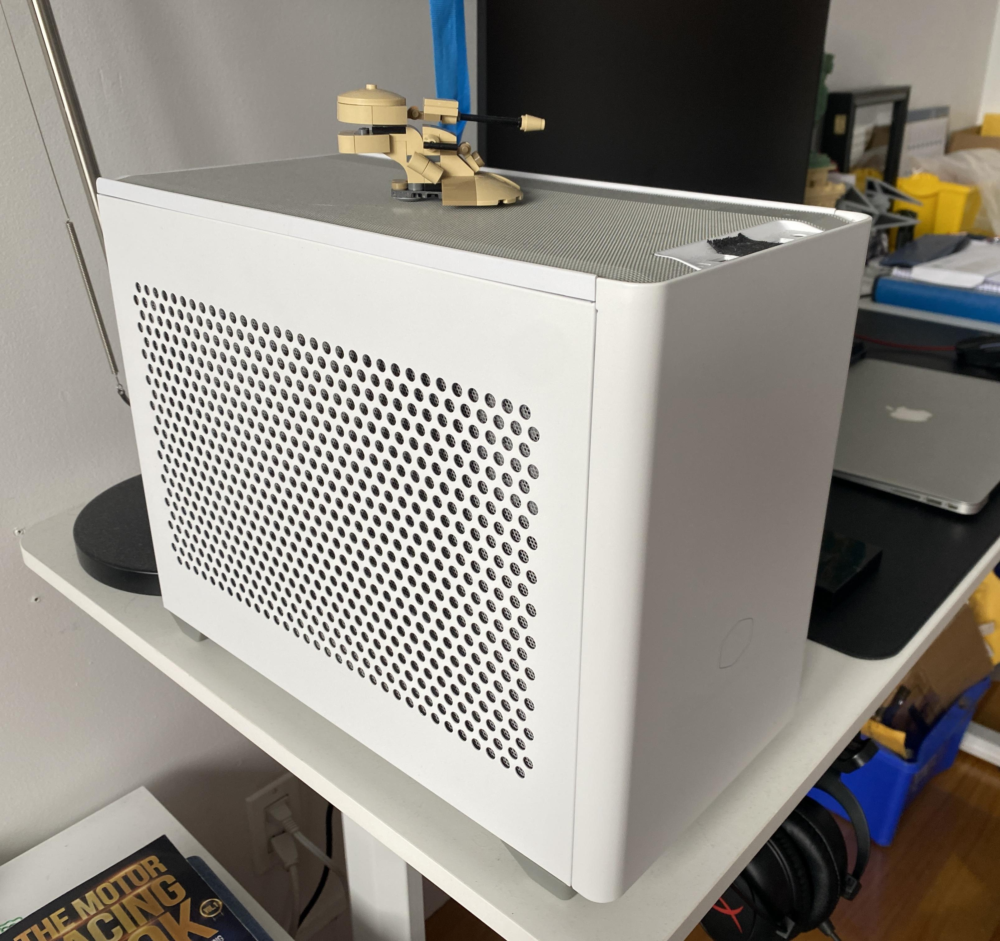
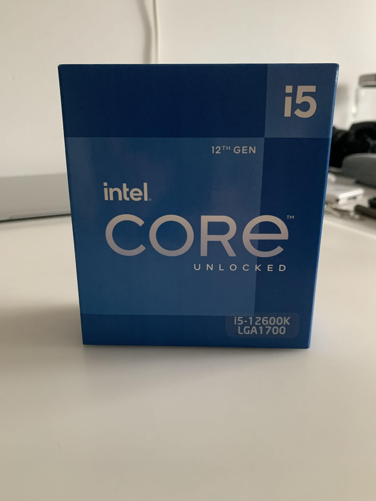
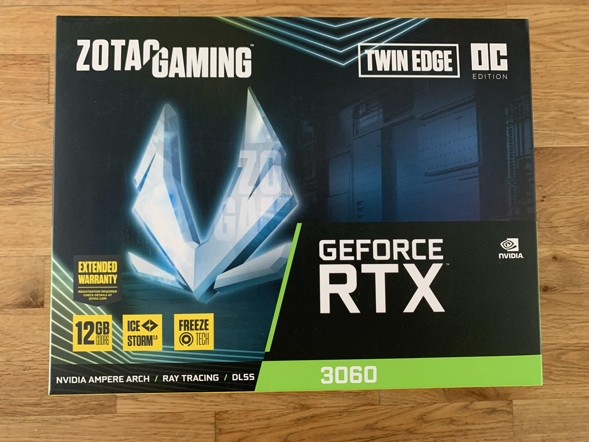
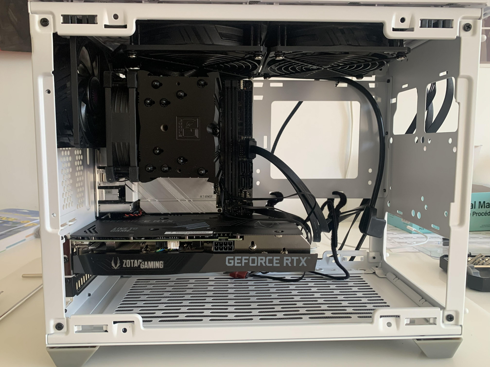
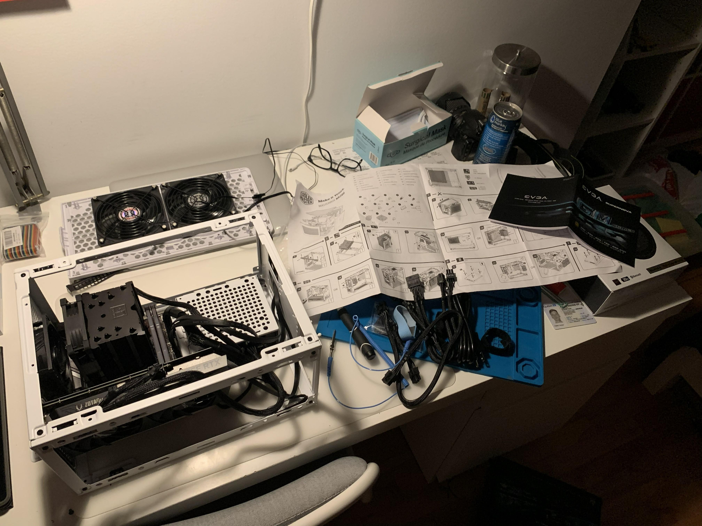
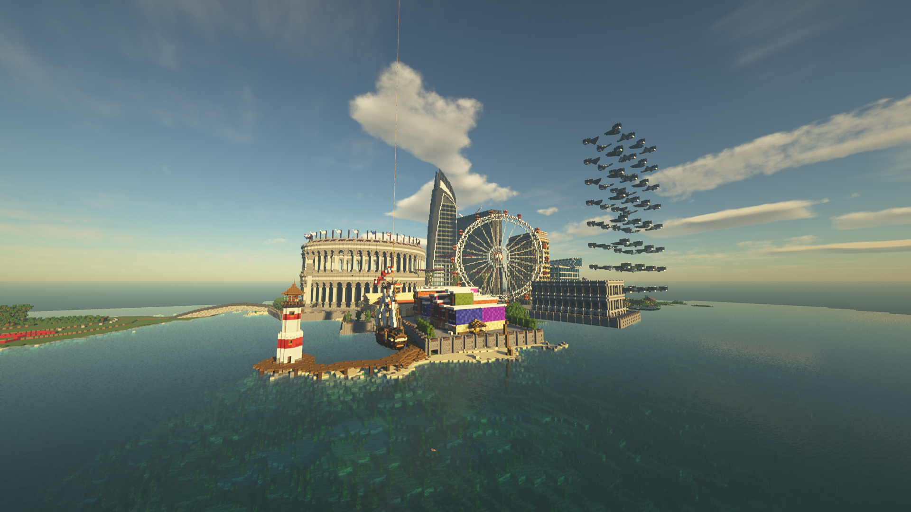
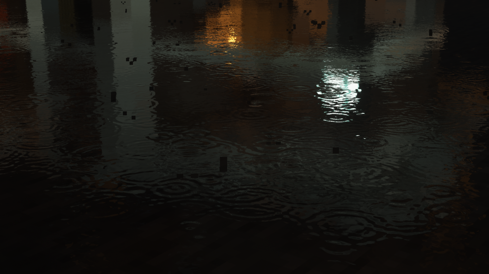

My Custom PC Build
This is my custom PC I built in 2022 during the pandemic. I still use this PC daily 4 years later. I had built another PC before that in 2020 but it was just too slow for the games I wanted to play (it had a basic i3 with the cheapest GPU I could find). At the time I had a VR headset (Oculus Quest 2) and that PC wasn't able to run VR games so I decided it was time to upgrade, and I didn't want to cheap out this time. It cost me around $2000 (CAD) to build this PC which I still find rediculous but I had built it during the chip shortage so prices were high (thankfully AI wasn't a thing back then).

I went with an Intel i5-12600K for the CPU. I had originally planned on going with an i7 but the price difference was pretty high for the performance and the 12600K was the best i5 at the time. Even to this day I rarely see it hit full usage.

For the GPU, I went with an RTX 3060. I was thinking of getting the 3050 but I didn't want to cheap out on the GPU and I'm glad I went with the 3060 because it has 12GB of VRAM which is great for running LLMs now. Anyway, my monitor is a 1440p 144Hz monitor and the 3060 is able to run most games at medium settings. Unfortunately, the 3060 isn't able to run VR games very well. It was very hit or miss with VR games. I was able to run Onward at max settings and max resolution on the Quest. But when it came to racing games like Assetto Corsa or iRacing, it was very touchy. With Assetto Corsa, the resolution was kind of low so it was hard to see far away. With iRacing, it would use half of the framerate and would be very choppy. Try going through a chicane 2-wide at 200kph with only 30fps - you already know I ended up in the barriers. I ended up selling my Quest to get a go kart and do real racing instead.


I also have 16GB of RAM, which isn't a lot but enough for my needs. I have a 1TB NVMe SSD for my main drive and ended up adding a smaller 256GB SATA drive just for Microsoft Flight Simulator (downloading the entire world takes up a lot of space). I got a Mini ITX montherboard and a small case to fit everyhting.
For my benchmarks, I just ran Minecraft with some shaders and boy was I impressed. It ran pretty smooth with some high quality shaders.

